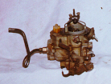

The Jeep 258 (4.2L) I6 isn't a power house, but it has gobs of low RPM torque that makes it a great engine off-road. The most common problem I see with the engine is it's inability to idle. Between the 258 in my '81 CJ-7 and a couple friends that have 258 equipped Wranglers, I have fixed this problem half a dozen times and the cause of the problem has always been the same. The problem has always been caused by clogged idle tubes that cause fuel to drip out of the venturis and make the Jeep run rich at idle. Fixing the problem is relatively easy and once you get past this problem, you will get much more enjoyment from the 258 and the Carter BBD carburetor.
The Carter BBD is a two barrel carburetor that was available on late 70s to late 80s Jeeps with the 4.2L engine. There are two variations of the carburetor, one is computer controlled and has a stepper motor on the back side. The computer controlled version was used after 1981. Other than that, the two versions are the same although it seems the stepper motor version is a bit more troublesome.
For a sure diagnosis, park the Jeep with the engine off and remove the air cleaner cover. There should be a plate over the throat of the carb, the choke plate. If you open the choke plate you should be able to see down the throat of the carb and you should see two screws with holes in the middle of them. Next to them are two passages with a nozzle in the middle of each. This thing is known as the venturi, when air passes by, fuel is supposed to be drawn out through the nozzles. If the idle tubes are clogged fuel will drip from those nozzles during idle.
In order to see if fuel drips from the nozzles at idle, you must start your Jeep with the air cleaner cover off and look down the throat of the carb. The Jeep Technical Service Manual recommends that, when you do this, you cover the air cleaner with a piece of plexiglass since the engine can backfire through the carb and a flame can shoot out. Since I am reckless and like living dangerously, I never do this.
After you have chosen the wise or foolish path, start your Jeep and open the choke plate. If your idle tubes are badly clogged, you will see fuel dripping from the nozzles at idle (if your Jeep will idle at all.) If you don't see fuel dripping, but your idle is still poor, open the throttle a bit with your hand or have a friend hit the accelerator. You should see two even streams of fuel and no dripping from the nozzles. Any dripping means clogged idle tubes.
While you are doing this, make sure you don't put your hand or anything else into rotating parts like the fan. Keep your tie away from that thing (some people just want to look good all the time.) Same goes if you are a "long hair, freaky" Tesla type. All joking aside, I've heard some bad stories.
To avoid repeated clogged idle tubes, drill out the idle tubes to 0.032". This will greatly reduce the frequency of clogging and it is a procedure that was actually recommended by Jeep for a while.
An alternative to removing the choke plate and all is to just remove the top of the carburetor. The advantage of this approach is you can make sure there isn't a lot of junk in the bowls, you can check your float adjustment, etc. It also may help if you have power brakes because the master cylinder may be in the way of getting the choke rod out.